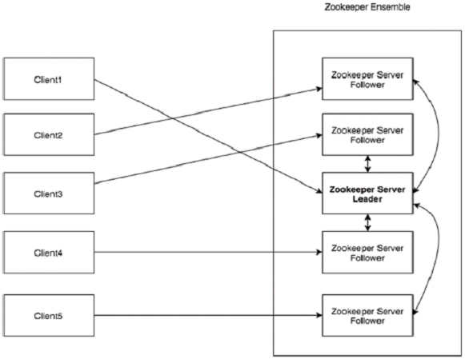
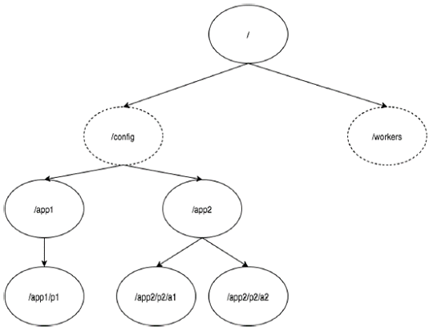

ZooKeeper是一种分布式协调服务。
Zookeeper概述
分布式应用
分布式应用可以在给定时间（同时）在网络中的多个系统上运行，通过协调它们以快速有效的方式完成特定任务。通常来说，对于复杂而耗时的任务，非分布式应用（运行在单个系统中）需要几个小时才能完成，而分布式应用通过使用所有系统涉及的计算能力可以在几分钟内完成。
通过将分布式应用配置为在更多系统上运行，可以进一步减少完成任务的时间。分布式应用正在运行的一组系统称为集群，而在集群中运行的每台机器被称为节点。服务器应用程序实际上是分布式的，并具有通用接口，以便客户端可以连接到集群中的任何服务器并获得相同的结果。客户端应用程序是与分布式应用进行交互的工具。
什么是Apache ZooKeeper？
Apache ZooKeeper是由集群（节点组）使用的一种服务，用于在自身之间协调，并通过稳健的同步技术维护共享数据。ZooKeeper本身是一个分布式应用程序，为写入分布式应用程序提供服务。
ZooKeeper提供的常见服务如下 :
- 命名服务：按名称标识集群中的节点。它类似于DNS，但仅对于节点。
- 配置管理：加入节点的最近和最新的系统配置信息。
- 集群管理：实时地在集群和节点状态中加入/离开节点。
- 选举算法：选举一个节点作为协调目的leader。
- 锁定和同步服务：在修改数据的同时锁定数据。此机制可帮助你在连接其他分布式应用程序时进行自动故障恢复。
- 高度可靠的数据注册表：即使在一个或几个节点关闭时也可以获得数据。
分布式应用程序提供了很多好处，但它们也抛出了一些复杂和难以解决的挑战。ZooKeeper框架提供了一个完整的机制来克服所有的挑战。竞争条件和死锁使用故障安全同步方法进行处理。另一个主要缺点是数据的不一致性，ZooKeeper使用原子性解析。
ZooKeeper的好处
以下是使用ZooKeeper的好处：
- 简单的分布式协调过程
- 同步 - 服务器进程之间的相互排斥和协作。此过程有助于Apache HBase进行配置管理。
- 有序的消息
- 序列化 - 根据特定规则对数据进行编码。确保应用程序运行一致。这种方法可以在MapReduce中用来协调队列以执行运行的线程。
- 可靠性
- 原子性 - 数据转移完全成功或完全失败，但没有事务是部分的。
Zookeeper基础
在深入了解ZooKeeper的运作之前，让我们来看看ZooKeeper的基本概念。我们将在本章中讨论以下主题：
1、Architecture（架构）
2、Hierarchical namespace（层次命名空间）
3、Session（会话）
4、Watches（监视）
ZooKeeper的架构
看看下面的图表。它描述了ZooKeeper的“客户端-服务器架构”。

作为ZooKeeper架构的一部分的每个组件在下表中进行了说明。
| 部分 | 描述 |
|---|---|
| Client（客户端） | 客户端，我们的分布式应用集群中的一个节点，从服务器访问信息。对于特定的时间间隔，每个客户端向服务器发送消息以使服务器知道客户端是活跃的。类似地，当客户端连接时，服务器发送确认码。如果连接的服务器没有响应，客户端会自动将消息重定向到另一个服务器。 |
| Server（服务器） | 服务器，我们的ZooKeeper总体中的一个节点，为客户端提供所有的服务。向客户端发送确认码以告知服务器是活跃的。 |
| Ensemble | ZooKeeper服务器组。形成ensemble所需的最小节点数为3。 |
| Leader | 服务器节点，如果任何连接的节点失败，则执行自动恢复。Leader在服务启动时被选举。 |
| Follower | 跟随leader指令的服务器节点。 |
层次命名空间
下图描述了用于内存表示的ZooKeeper文件系统的树结构。ZooKeeper节点称为 znode 。每个znode由一个名称标识，并用路径(/)序列分隔。
- 在图中，首先有一个由“/”分隔的znode。在根目录下，有两个逻辑命名空间 config 和 workers 。
- config 命名空间用于集中式配置管理，workers 命名空间用于命名。
- 在 config 命名空间下，每个znode最多可存储1MB的数据。这与UNIX文件系统相类似，除了父znode也可以存储数据。这种结构的主要目的是存储同步数据并描述znode的元数据。此结构称为 ZooKeeper数据模型。

ZooKeeper数据模型中的每个znode都维护着一个 stat结构。一个stat仅提供一个znode的元数据。它由版本号，操作控制列表(ACL)，时间戳和数据长度组成。
- 版本号：每个znode都有版本号，这意味着每当与znode相关联的数据发生变化时，其对应的版本号也会增加。当多个zookeeper客户端尝试在同一znode上执行操作时，版本号的使用就很重要。
- 操作控制列表（ACL）：ACL基本上是访问znode的认证机制。它管理所有znode读取和写入操作。
- 时间戳：时间戳表示创建和修改znode所经过的时间。它通常以毫秒为单位。Zookeeper用“事务ID”（zxid）标识znode的每个更改。zxid是唯一的（对于整个zookeeper都是唯一的，即使操作的是不同的znode），并且为每个事务保留时间，以便可以轻松地确定从一个请求到另一个请求所经过的时间。
- 数据长度：存储在znode中的数据总量是数据长度。最多可以存储1MB的数据。
Sessions（会话）
会话对于ZooKeeper的操作非常重要。会话中的请求按FIFO顺序执行。一旦客户端连接到服务器，将建立会话并向客户端分配会话ID（什么时候建立会话，以及建立会话时发生了什么？）。
客户端以特定的时间间隔发送心跳以保持会话有效。如果ZooKeeper集合在超过服务器开启时指定的期间（会话超时）都没有从客户端接收到心跳，则它会判定客户端死机。会话超时通常以毫秒为单位。当会话由于任何原因结束时，在该会话期间创建的临时节点也会被删除。
Watches（监视）
监视是一种简单的机制，使客户端收到关于ZooKeeper集合中的更改的通知（监视的作用）。客户端可以在读取特定znode时设置Watches。Watches会向注册的客户端发送任何znode（客户端注册表）更改的通知。
Znode更改是与znode相关的数据的修改或znode的子项中的更改。只触发一次watches。如果客户端想要再次通知，则必须通过另一个读取操作来完成。当连接会话过期时，客户端将与服务器断开连接，相关的watches也将被删除。
Zookeeper 工作流
一旦ZooKeeper集合启动，它将等待客户端连接。客户端将连接到ZooKeeper集合中的一个节点。它可以是leader或follower节点。一旦客户端被连接，节点将向特定客户端分配会话ID并向该客户端发送确认。如果客户端没有收到确认，它将尝试连接ZooKeeper集合中的另一个节点。 一旦连接到节点，客户端将以有规律的间隔向节点发送心跳，以确保连接不会丢失。
- 如果客户端想要读取特定的znode，它将会向具有znode路径的节点发送读取请求，并且节点通过从其自己的数据库获取数据来返回所请求的znode。为此，在ZooKeeper集合中读取速度很快。
- 如果客户端想要将数据存储在ZooKeeper集合中，则会将znode路径和数据发送到服务器。连接的服务器将该请求转发给leader，然后leader将向所有的follower重新发出写入请求。如果只有大部分节点成功响应，而写入请求成功，则成功返回代码将被发送到客户端。 否则，写入请求失败。绝大多数节点被称为Quorum 。
ZooKeeper集合中的节点
让我们分析在ZooKeeper集合中拥有不同数量的节点的效果。
- 如果我们有单个节点，则当该节点故障时，ZooKeeper集合将故障。这会导致“单点故障”，不建议在生产环境中使用。
- 如果我们有两个节点而一个节点故障，我们没有占多数，因为两个中的一个不是多数。
- 如果我们有三个节点而一个节点故障，那么我们有大多数，因此，这是最低要求。ZooKeeper集合在实际生产环境中必须至少有三个节点。
- 如果我们有四个节点而两个节点故障，它将再次故障。类似于有三个节点，额外节点不用于任何目的，因此，最好添加奇数的节点，例如3，5，7。
我们知道写入过程比ZooKeeper集合中的读取过程开销要大，因为所有节点都需要在数据库中写入相同的数据。因此，对于平衡的环境拥有较少数量（例如3，5，7）的节点比拥有大量的节点要好。
下图描述了ZooKeeper工作流，后面的表说明了它的不同组件。

| 组件 | 描述 |
|---|---|
| 写入（write） | 写入过程由leader节点处理。leader将写入请求转发到所有znode，并等待znode的回复。如果一半的znode回复，则写入过程完成。 |
| 读取（read） | 读取由特定连接的znode在内部执行，因此不需要与集群进行交互。 |
| 复制数据库（replicated database） | 它用于在zookeeper中存储数据。每个znode都有自己的数据库，每个znode在一致性的帮助下每次都有相同的数据。 |
| Leader | Leader是负责处理写入请求的Znode。 |
| Follower | follower从客户端接收写入请求，并将它们转发到leader znode。 |
| 请求处理器（request processor） | 只存在于leader节点。它管理来自follower节点的写入请求。 |
| 原子广播（atomic broadcasts） | 负责广播从leader节点到follower节点的变化。 |
Zookeeper leader选举
让我们分析如何在ZooKeeper集合中选举leader节点。考虑一个集群中有N个节点。leader选举的过程如下：
- 所有节点创建具有相同路径 /app/leader_election/guid_ 的顺序、临时节点。
- ZooKeeper集合将附加10位序列号到路径，创建的znode将是 /app/leader_election/guid_0000000001，/app/leader_election/guid_0000000002等。
- 对于给定的实例，在znode中创建最小数字的节点成为leader，而所有其他节点是follower。
- 每个follower节点监视它前面的那个具有较小序号的znode。例如，创建znode/app/leader_election/guid_0000000008的节点将监视znode/app/leader_election/guid_0000000007，创建znode/app/leader_election/guid_0000000007的节点将监视znode/app/leader_election/guid_0000000006。
- 如果leader关闭，则其相应的znode/app/leader_election/guid_000000000N会被删除。
- 下一个在线follower节点将通过监视器获得关于leader移除的通知。
- 下一个在线follower节点将检查是否存在其他具有更小序号的znode。如果没有，那么它将承担leader的角色。否则，它找到的创建具有更小序号的znode的节点将作为leader。
- 类似地，所有其他follower节点选举创建具有最小序号的znode节点作为leader。
zookeeper应用场景
分布式锁
利用Zookeeper的临时顺序节点，可以实现分布式锁。
服务注册和发现
利用Znode和Watcher，可以实现分布式服务的注册和发现。最著名的应用就是阿里的分布式RPC框架Dubbo。
共享配置和状态信息
Redis的分布式解决方案Codis，就利用了Zookeeper来存放数据路由表和 codis-proxy 节点的元信息。同时 codis-config 发起的命令都会通过 ZooKeeper 同步到各个存活的 codis-proxy。
此外，Kafka、HBase、Hadoop，也都依靠Zookeeper同步节点信息，实现高可用。
Zookeeper 安装
java通过源码安装。
java配置信息：
启动过程中报错
报错信息
1 | root@ivic:/opt/zookeeper-3.5.6# vim /etc/profile |
重新换了一个版本，zookeeper-3.4.14，安装成功。
第一步：查看启动状态
1 | ivic@ivic:~/zookeeper$ bin/zkServer.sh status |
zookeeper配置文件
详见参考文献。这里只列举几个常用选项。
集群选项：
initLimit：Observer和Follower启动时，从Leader同步最新数据时，Leader允许initLimit * tickTime时间内完成。如果同步的数据量很大，可以相应地把这个值设置得大一些。
参考文献
[1]zookeeper：https://www.w3cschool.cn/zookeeper/zookeeper_overview.html
[2]漫画zookeeper：https://mp.weixin.qq.com/s/Gs4rrF8wwRzF6EvyrF_o4A
[3]zookeeper的znode剖析：https://blog.csdn.net/lihao21/article/details/51810395
[4]zookeeper配置文件：https://blog.csdn.net/qianshangding0708/article/details/50067483